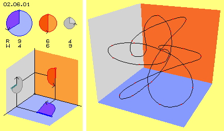
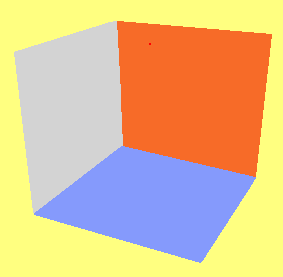
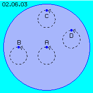
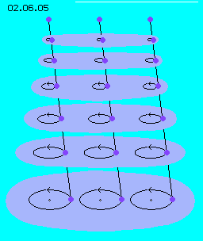

| Alfred Evert | 2003-03-08 |
02.06. Spiralcluster

Movements of that kind are only possible at material level of occurrences. The clear differing between movement possibilities within the aether versus these of the aether occurrences is essential, because it´s inadmissible to transfer experiences of the material world by analogy (or unintentional) onto the quite other conditions which are valid at the quite different substance of the aether.
Naturally exist previous waves and circles, straight and twisted movements and also standstill within the world of material occurrences. However, these are secondary appearances, here called ´local movements´ and described at following third part. Here at first however, the universal movements of the aether must be discussed.
Universal Motion 
After each short section, the track is turning into an other direction. The turning-radius is steady varying and also the speeds are changing at the merging sections of the track. The turning-axis is ´tumbling´ within the space. Instead of previous fictive example of three circling motions, in reality many radiations of diverse kind are racing through the space into any direction and are crossing at every spot within the aether. As a whole, the resulting motion within the aether appears chaotic, nevertheless its only the summary of each single ordered motion pattern of electromagnetic waves. Suitable instruments well can sort out a hidden swinging pattern from that ´jumbled interference´.
The aetherpoint observed keeps its local area all times. Even its running around at confusing tracks, finally it comes back to its starting place. So that motion-cluster might really represent a ´standing wave´ within the space. Pattern like these might reach far out and be long lasting, so they determine e.g. all movements within a galaxy. A ´stroke component´ for example builds the regularity for the revolutions of planets around the Sun. At the other hand, a local area of the aether takes the tiny motion pattern of a photon only for a short moment.
Synchronous Swinging 
Picture 02.06.03 shows a simplistic example. An aetherpoint A is moving at a circle track. An aetherpoint B at left side must move synchronous around his own turning centre. Analogue must move the aetherpoint C some above and the aetherpoint D right side. At these ´swing-motions´ (opposite to the term of ´rotation´) thus a neighbour left side keeps left all times, a neighbour upside of keeps above, a neighbour of right side keeps right.
That´s the essential difference between the rotating motion of material particles and the swinging motion within the aether: at a rotating wheel, all parts are turning around one common fulcrum. Here within the aether, each aetherpoint is turning around its own fulcrum, synchronous and parallel to its neighbours. During these swinging motions, the distance between all aetherpoints keeps constant. The aetherpoint are never gliding at border faces alongside each other. The animation shows not only the four marked aetherpoints are moving parallel but the whole area of aether is swinging likely.
Unlimited far or locally concentrated
If indeed all aether is coherent everywhere without any gaps between, theoretical such swinging aether areas must reach from one end of the universe to the other end. In addition, also upside of and below of that swinging disc, all neighbouring aetherpoints must move synchronous. Thus the whole universe must swing likely. That might not be true, i.e. it must be possible the swinging motions are concentrated to a limited area.

Upside at this picture are marked three ´resting´ aetherpoints, standing stationary within the space. The connecting lines from the upper to the lower aetherpoints represent all neighbouring aetherpoints between. If the aetherpoints below are moving at each circle tracks, all aetherpoints of these lines must also move at circle tracks. However, towards upside the circles show each shorter radius. The intensity of the swinging motions thus decreases from bottom up. Nevertheless, all involved aetherpoints still keep mutual constant distance (what´s inevitable characteristic within the gapless aether).
If this arrangement is mirrored downward, a swinging layer of aether is enclosed upside and below within layers of stationary aether. This kind of motion shape e.g. show the spiral galaxies. Even they are far extended, they build relative thin discs. Also our planets are moving within the thin plane of the ecliptic, so also the whirlpool of the Sun shows a flat lenticular shape. Each rotating planet, also the earth, is embedded within a swinging aether disc, identified by the tracks of moons. These discs also exist most frequent at minimum size: each photon is a flat disc and its motion pattern ´screws´ spiral forward through the aether.
Upside at picture 02.06.01 are overlaying only three circling motions at right angles. Resulting are swinging motions into all directions. Each of their motion components can be reduced towards outside, analogue to previous picture 02.06.05. So local motion units can not only be flattened into one direction, but can be diminished towards outside all around. At the ideal shape of a sphere, the internal motions are merging towards outside into ´resting´ aether all around. Most frequent occurrence of a perfect motion-sphere is the electron. Also the most frequent chemical element of hydrogen shows a similar shape. The atoms more complex are mostly no units of perfect sphere shape because their internal swinging motion are most differing pattern.
Universal
A most important characteristic is the fact, the local motion-units are embedded all around within the ´resting´ Free Aether. However, there are never sharp borders but only a smooth transition of balancing motions. Also the atoms have no clear borders. If atoms build ordered assemblies, e.g. crystals, also that additional order radiates into the neighbouring areas. Some atoms are radiating by itself with quite ´material´ consequences, thus naturally also these motion patter must be manifested substantially.
Naturally all living being are surrounded by an ´aura´. Even materialists can not ignore the charisma certain people radiate. The brain-scientists are searching the areas where memory and intellectual capacities are located and done by chemical or electromagnetic processes. An especially nebulous appearance is the consciousness. Even stranger appears the subconscious with its facility to receive and handle much more information than the knows senses and the brain. There is no corresponding ´material´ organism known. We western people got extreme ego-centric, so a ´group-consciousness´ comes up only within arenas with artistic or sportive performance. Some times to ´grasp by hands´. Up to now one can not imagine how some species achieve incredible performances by ´swarm-intelligence´. At all these different cases: where are the data stored and how can these individual units take the information?
Some people are conscious prevailingly to be a spiritual being. For some it´s quite natural to be an immortal soul. For me it´s quite natural, all these items can not only be anyhow nebulous and can not take place only at some abstract dimensions. Here and now, the omnipresent aether has sufficient capacity for taking also the whole variety of mental and social and spiritual appearances of any kind and time. So it´s my intention, these researches might be done with concern to the substantial basis in shape of this aether.
It´s relative easy to demonstrate, the ´simple´ appearances of material-physical world are based at that concrete primary matter. The nature-sciences would have great potential for development, if only replacing the fictive vacuum by the real substance of the aether and researching the diverse motion-pattern within.
At previous chapters were excluded these movement shapes which are not possible within the aether substance by itself. There are no aether portions that could move relative to others, neither as longitudinal nor transversal waves, neither purely circled nor straight linear, neither outside-inward nor by standing waves.
Such areas can be huge, e.g. far like the Milky Way or the Sun system. However, also there the aether does not rotate spacious around one center. Also within these ´whirlpools´ the aether is swinging at an only narrow space. Only a common characteristic of motion (the ´stroke component´) is pushing the motion-pattern of all atoms forward within the aether whirlpools. Only by that effect comes up the (illusionary) impression, material celestial bodies would rotate around the galactic center and around the Sun (details are discussed comprehensive at later chapters).
The basis of all appearances is the anywhere likely aether as it´s the universal medium of global and local swinging pattern. At any place of the earth, for example, most different ´information´ is stored in shape of certain real motion components: the regularity of ´material´ motions within the Milky Way and within the Sun system. A special motion component causes the (seemingly) rotation of the earth. We don´t feel anything about these movements, because the motion pattern of all atoms (naturally also of our body) are pushed forward likely within the aether-space. Opposite, we can feel an other swinging pattern, pushing all atoms towards the earth center. Same time, the aether is overlaid by the photons of the light and many other radiations we can not feel nor register directly. So as a whole, the motions within the aether are mixed up by an ´incredible´ scope.
Aether-Physics and -Philosophy